Start URRC
SAR_URRC_SUB_10m_bad_mach
kp bf m SAR: 108
RMSE[m]: 52.351738981128044, CMR[%]: 0.0, treshold: 13.098655297330989, T: 0.2009311020374298
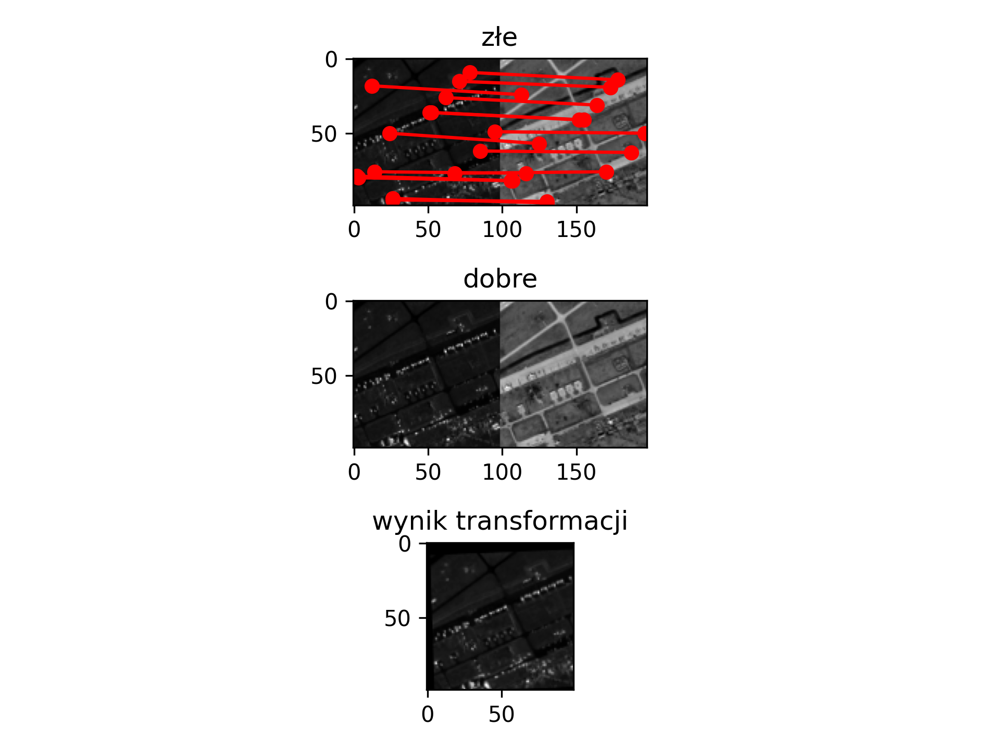SAR_URRC_SUB_10m_gray_mach
kp bf m SAR: 115
RMSE[m]: 535.0786358633467, CMR[%]: 0.0, treshold: 13.098655297330989, T: 0.31567609310150146
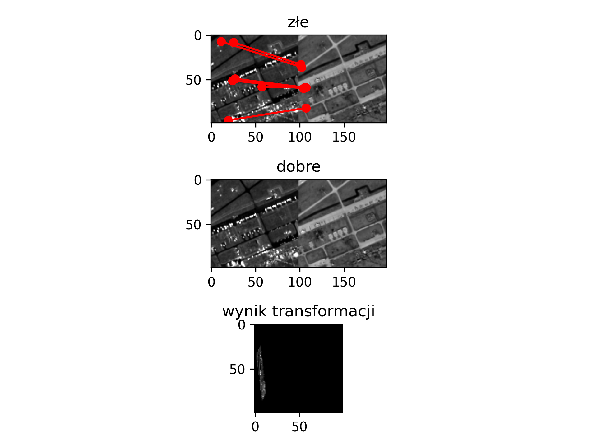SAR_URRC_SUB_10m_log_mach
kp bf m SAR: 105
RMSE[m]: 51.481233507870115, CMR[%]: 0.0, treshold: 13.098655297330989, T: 0.5117440819740295
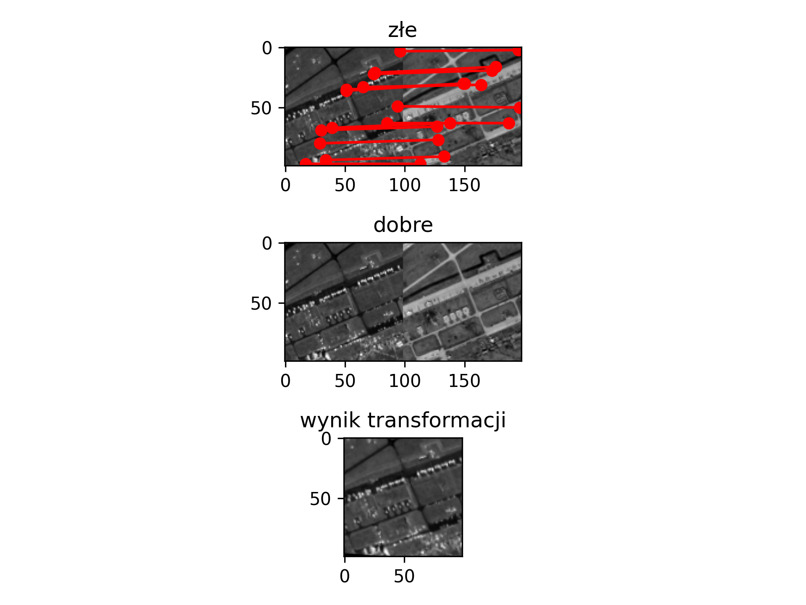SAR_URRC_SUB_1m_bad_mach
kp bf m SAR: 14119
RMSE[m]: 47.62184505984146, CMR[%]: 313.04347826086956, treshold: 13.098709295489696, T: 204.95504760742188
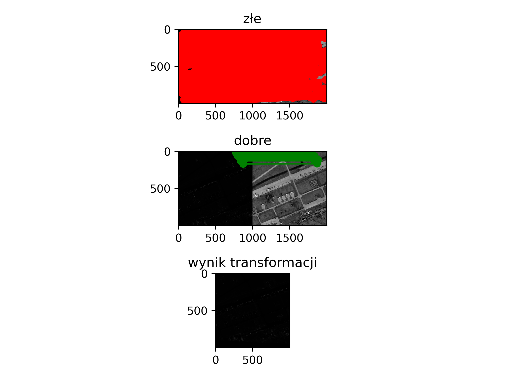SAR_URRC_SUB_1m_gray_mach
kp bf m SAR: 14005
RMSE[m]: 3.0391447764675883, CMR[%]: 3539.7412199630307, treshold: 13.098709295489696, T: 193.2161865234375
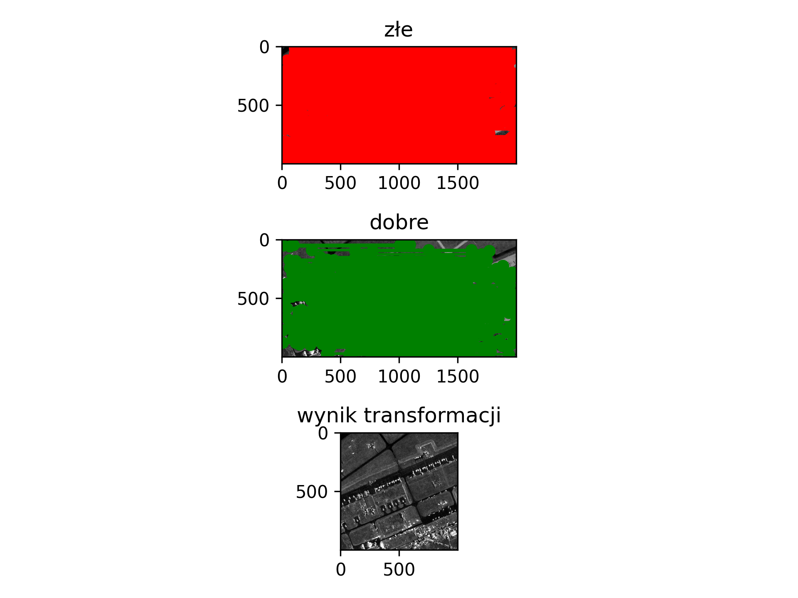SAR_URRC_SUB_1m_log_mach
kp bf m SAR: 13768
RMSE[m]: 4.501821372359555, CMR[%]: 2594.4841675178754, treshold: 13.098709295489696, T: 188.0778350830078
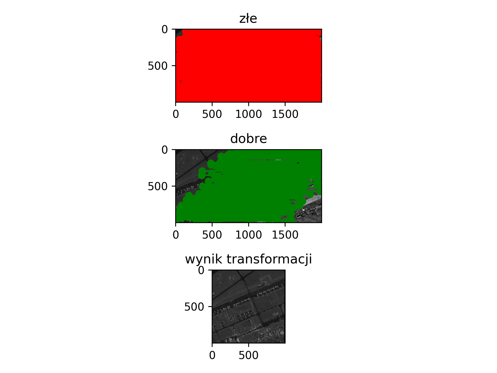SAR_URRC_SUB_035m_bad_mach
not enought points
SAR_URRC_SUB_035m_gray_mach
not enought points
SAR_URRC_SUB_035m_log_mach
not enought points
SAR_URRC_SUB_GM_035m_bad_mach
not enought points
SAR_URRC_SUB_GM_035m_gray_mach
not enought points
SAR_URRC_SUB_GM_035m_log_mach
not enought points
End URRC
Start UIAA
SAR_UIAA_SUB_10m_bad_mach
kp bf m SAR: 124
RMSE[m]: 247.14120531082585, CMR[%]: 0.0, treshold: 12.379619195448601, T: 0.2197151929140091
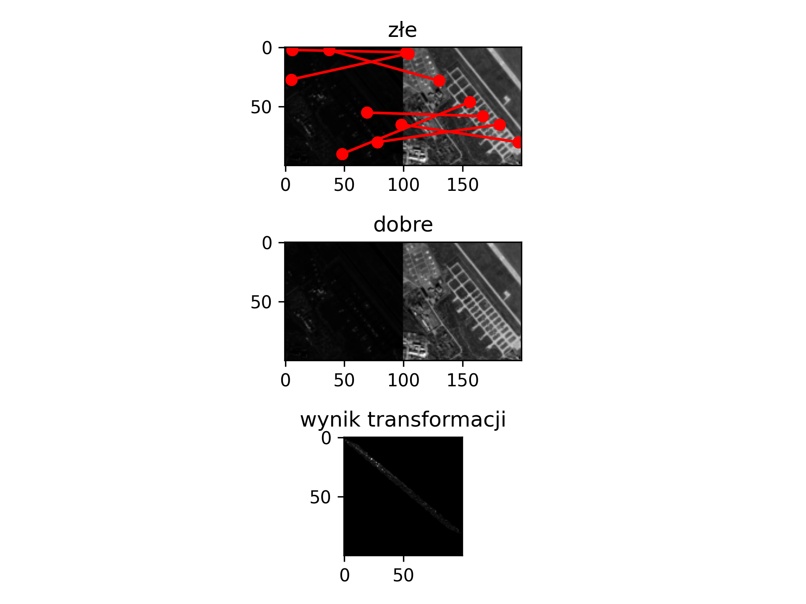SAR_UIAA_SUB_10m_gray_mach
kp bf m SAR: 127
RMSE[m]: 110.86618926410102, CMR[%]: 0.0, treshold: 12.379619195448601, T: 0.21657009422779083
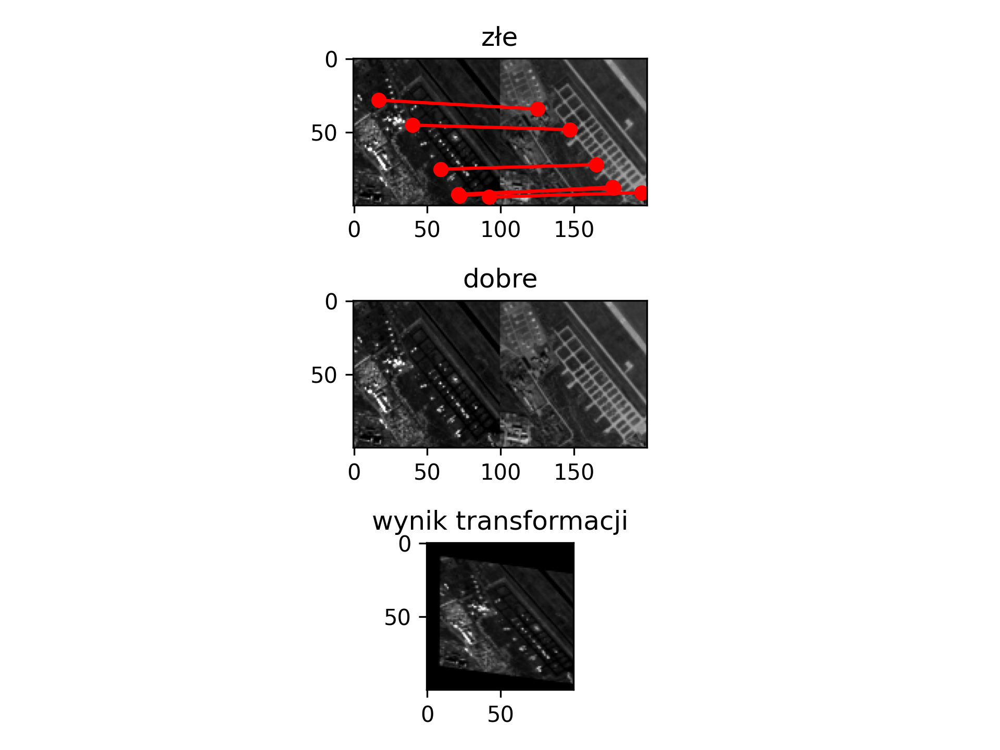SAR_UIAA_SUB_10m_log_mach
kp bf m SAR: 123
RMSE[m]: 215.811923389619, CMR[%]: 909.0909090909091, treshold: 12.379619195448601, T: 0.24505379796028137
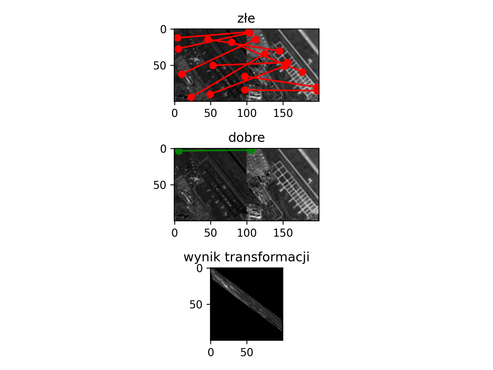SAR_UIAA_SUB_1m_bad_mach
kp bf m SAR: 9840
RMSE[m]: 781.9585086072332, CMR[%]: 0.0, treshold: 12.37961579004562, T: 164.646240234375

SAR_UIAA_SUB_1m_gray_mach
kp bf m SAR: 14834
RMSE[m]: 310.66049106151087, CMR[%]: 0.0, treshold: 12.37961579004562, T: 216.5225830078125
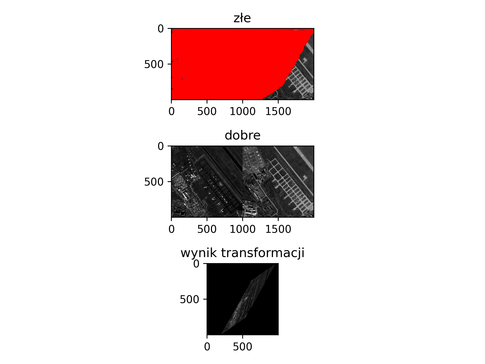SAR_UIAA_SUB_1m_log_mach
kp bf m SAR: 14815
RMSE[m]: 35.26085497026906, CMR[%]: 490.71618037135283, treshold: 12.37961579004562, T: 204.00282287597656
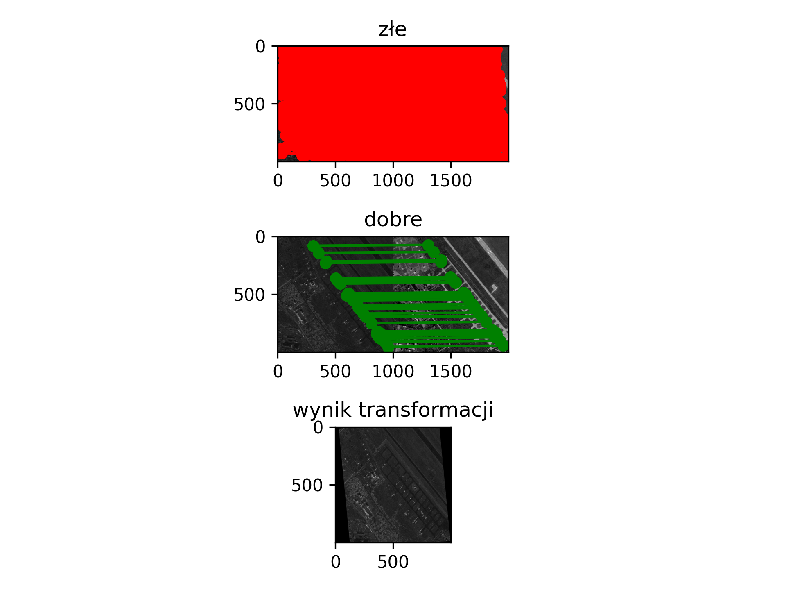SAR_UIAA_SUB_035m_bad_mach
not enought points
SAR_UIAA_SUB_035m_gray_mach
not enought points
SAR_UIAA_SUB_035m_log_mach
not enought points
SAR_UIAA_SUB_GM_035m_bad_mach
not enought points
SAR_UIAA_SUB_GM_035m_gray_mach
not enought points
SAR_UIAA_SUB_GM_035m_log_mach
not enought points
End UIAA
Start URWH
SAR_URWH_SUB_10m_bad_mach
kp bf m SAR: 105
RMSE[m]: 87.73058040454167, CMR[%]: 0.0, treshold: 8.168450698170915, T: 0.13699430227279663
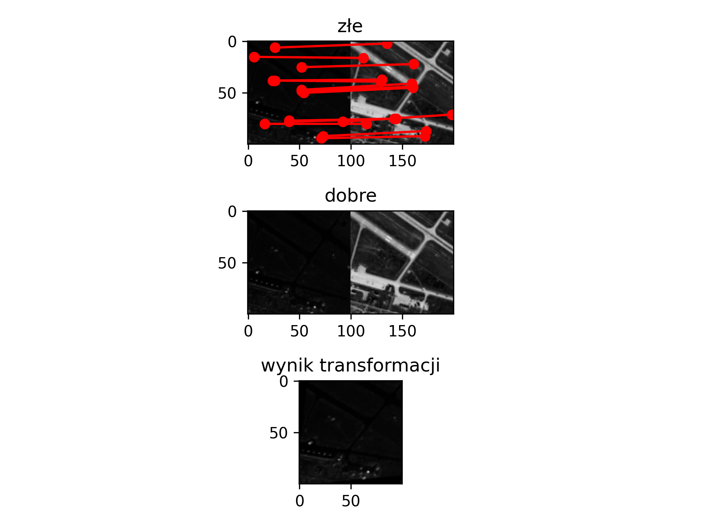SAR_URWH_SUB_10m_gray_mach
kp bf m SAR: 104
RMSE[m]: 619.0878620762627, CMR[%]: 0.0, treshold: 8.168450698170915, T: 0.15478980541229248
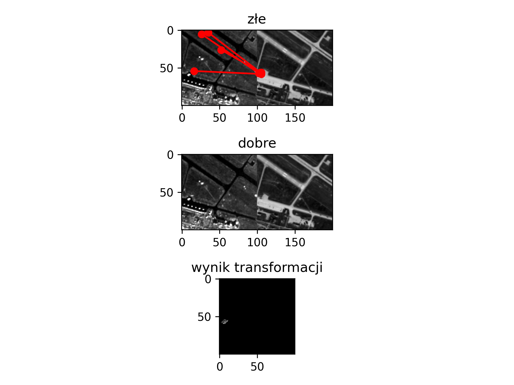SAR_URWH_SUB_10m_log_mach
kp bf m SAR: 82
RMSE[m]: 12.747109190563272, CMR[%]: 1363.6363636363635, treshold: 8.168450698170915, T: 0.18427209556102753
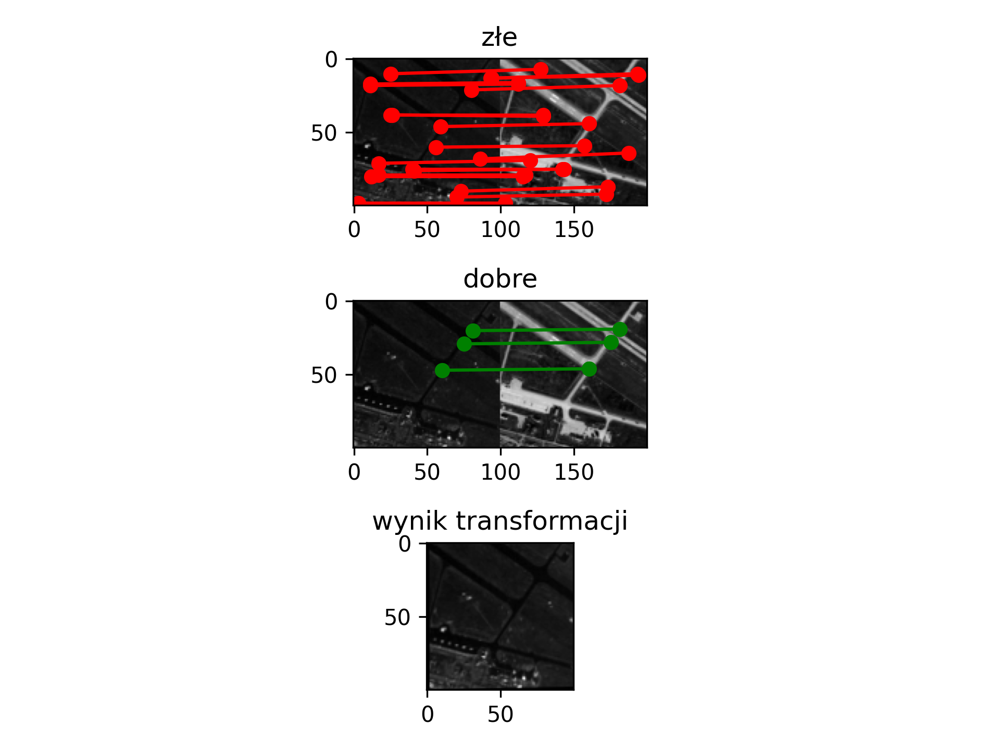SAR_URWH_SUB_1m_bad_mach
kp bf m SAR: 15735
RMSE[m]: 677.0555407476033, CMR[%]: 0.0, treshold: 8.168449530927038, T: 202.61471557617188
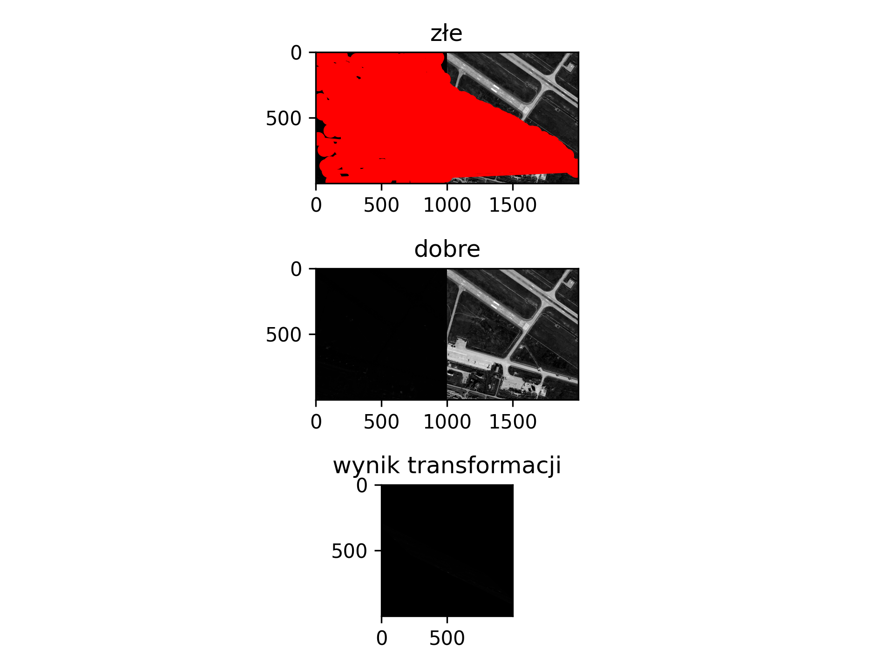SAR_URWH_SUB_1m_gray_mach
kp bf m SAR: 15306
RMSE[m]: 1.6921530341905027, CMR[%]: 2450.7389162561576, treshold: 8.168449530927038, T: 193.8264923095703
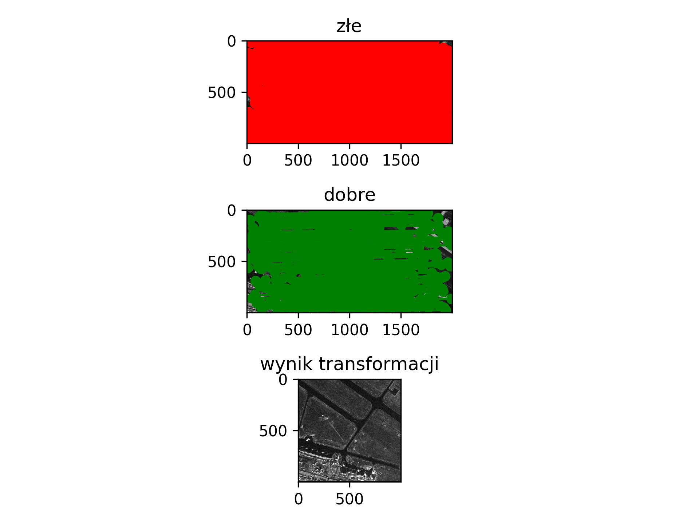SAR_URWH_SUB_1m_log_mach
kp bf m SAR: 16180
RMSE[m]: 9.399873144167314, CMR[%]: 511.4401076716016, treshold: 8.168449530927038, T: 200.71536254882812
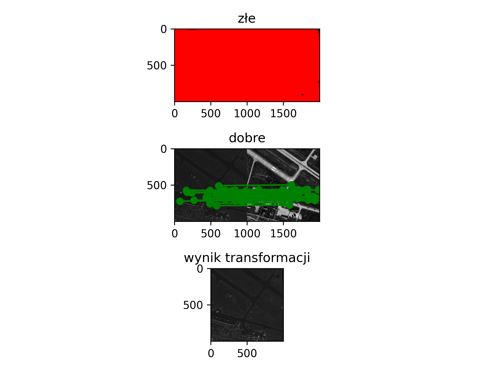SAR_URWH_SUB_035m_bad_mach
not enought points
SAR_URWH_SUB_035m_gray_mach
not enought points
SAR_URWH_SUB_035m_log_mach
not enought points
SAR_URWH_SUB_GM_035m_bad_mach
not enought points
SAR_URWH_SUB_GM_035m_gray_mach
not enought points
SAR_URWH_SUB_GM_035m_log_mach
not enought points
End URWH
Start UDYE
SAR_UDYE_SUB_10m_bad_mach
not enought points
SAR_UDYE_SUB_10m_gray_mach
not enought points
SAR_UDYE_SUB_10m_log_mach
kp bf m SAR: 30
RMSE[m]: 212.75459298486706, CMR[%]: 0.0, treshold: 12.291004234160683, T: 0.10219740122556686
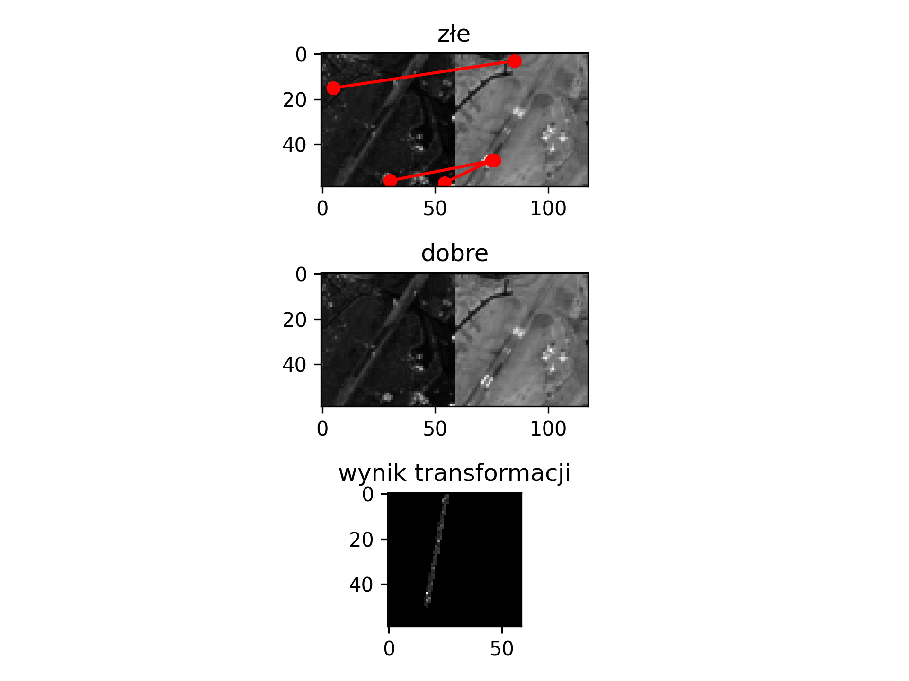SAR_UDYE_SUB_1m_bad_mach
not enought points
SAR_UDYE_SUB_1m_gray_mach
not enought points
SAR_UDYE_SUB_1m_log_mach
not enought points
SAR_UDYE_SUB_035m_bad_mach
not enought points
SAR_UDYE_SUB_035m_gray_mach
not enought points
SAR_UDYE_SUB_035m_log_mach
not enought points
SAR_UDYE_SUB_GM_035m_bad_mach
not enought points
SAR_UDYE_SUB_GM_035m_gray_mach
not enought points
SAR_UDYE_SUB_GM_035m_log_mach
not enought points
End UDYE